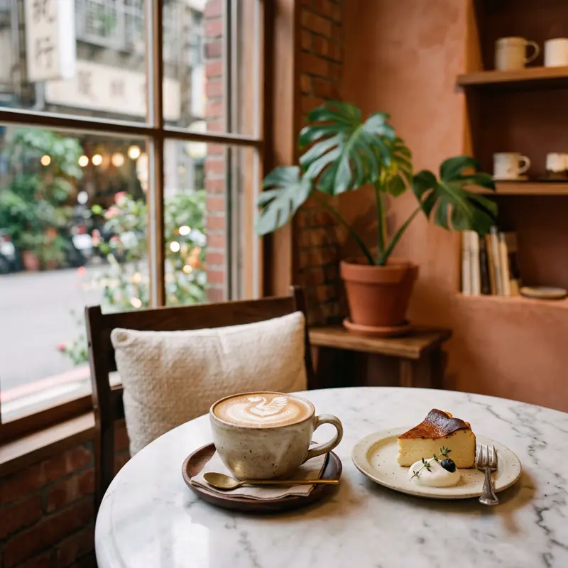

대만, 특히 타이중은 카페 밀도가 높기로 유명합니다. 스페셜티 원두를 다루는 로스터리형 카페부터 오래된 건물을 개조한 인테리어 맛집까지 스타일이 다양하고, 대부분 좌석 회전에 여유가 있어 오래 머물기 좋아요.
무엇이 특별할까요?
01
타이중 카페 투어
타이중 시먼루·이중가 인근에 감성 카페가 밀집해 있어요.
02
1인 1메뉴 룰
많은 카페가 좌석당 최소 1인 1음료 주문을 요구합니다.
03
콘센트/와이파이
노트북 작업하기 좋은 카페는 대부분 콘센트와 와이파이를 안내판에 표시해둬요.
이렇게 즐겨보세요
- ✓인기 카페는 오후 시간대(2~5시)가 가장 붐빔
- ✓좌석 이용시간 제한(2시간 등)이 있는지 입구 안내문 확인
- ✓1인 1메뉴 주문 룰 여부 확인
- ✓사진 촬영 시 다른 손님 자리 침범하지 않기
Real spots
전체 화면 지도로 보기 →
여행자들이 등록한 진짜 맛집
이 카테고리에 실제로 등록된 맛집을 지역별로 모아봤어요. 새로 등록되면 여기에도 바로 반영돼요. 핀을 눌러 추천 투표도 남길 수 있어요.
📍타이베이
📍가오슝
📍타이중
📍타이난
📍이란
📍타이동
Join the map
지금 등록하기 →
나만의 맛집을 공유해주세요 🤫
여러분의 발견이 다른 여행자들에게 진짜 대만을 경험하게 해줍니다.